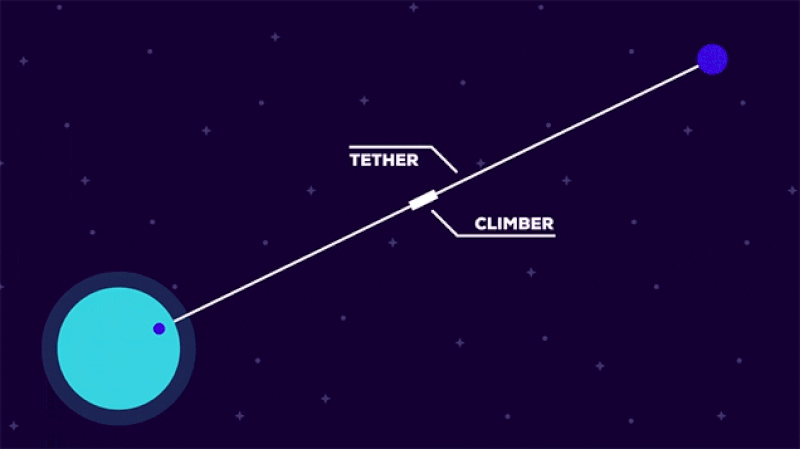
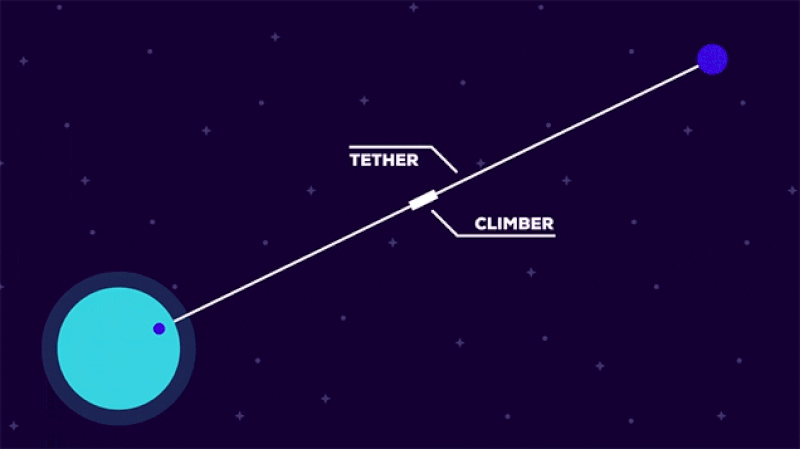

Type 1 Civilization
The people of a type 1 civilization are a truly planetary species. They have the ability to harvest and store all the energy falling onto their planet from their home star, all types of renewable energy, and have harnessed the power of antimatter and nuclear fusion.
With this power, a type 1 civilization has the ability to become a terraforming powerhouse. They can change the weather to their whim, control earthquakes and volcanoes.
Being classed as Type 1 means you are the masters of your planet, not the other way round.
Akin to today, the tech of a type 1 civilization will require the utilization of space.
Below is a video detailing why this is the case, but this all requires a lot of energy just to put things up there, and bringing them back down. To the left you might notice a GIF, this is the barebones basics of a space elevator and is a necessary step to becoming truly space-faring.
If you’re interested, there will be a whole video solely about Space Elevators and their feasibility down below.
The standard for Type 1 is roughly equivalent to converting 280kg of hydrogen into helium per second. That’s 8.9 Billion kgs per year. A single cubic km or water contains about 100 Billion kgs of hydrogen, and on top of that, all the water in all the oceans on this planet hold roughly 1.3 Billion cubic kms of water.
The implication is such that humanity could sustain its current energy needs for GROLOGIC TIME-SCALES.
Oh and I'll just add one more thing.
Go watch the video down below called “Starship Earth to Earth”. Then think about back when our planet used to be an endless world as far as the horizon.
Our horizon has expanded drastically over the past 500 years.
Although people like Eratosthenes already knew the planet was round for over 2,000 years, but there was still that long outdated idea that Earth was at the centre of the universe let alone the solar system, so for the first time in history, humanity has been able to view our mother Earth from afar and see her as the fragile speck of dust that she really is, what with that apple skin thin atmosphere, and this incredibly interwoven and completely connected ecosystem.
Maybe it won’t be in the immediate future, but the concept of Starship Earth to Earth will connect us as a species in a way like never before.